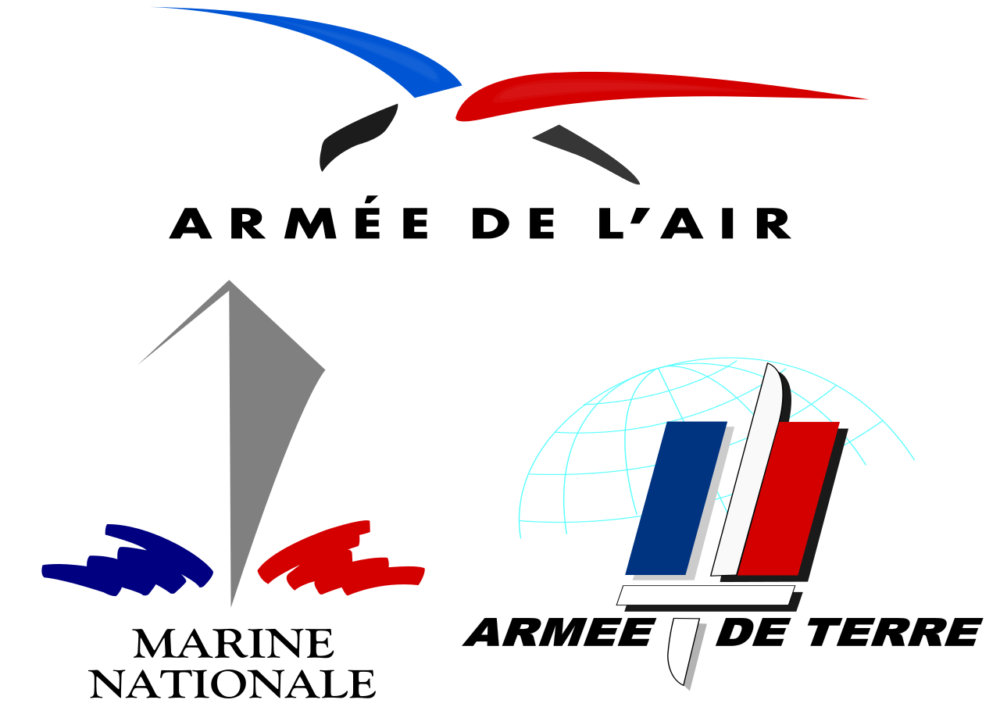

Mon projet professionel
Mon projet professionel en cours d'études :
Avant de présenter mes idées de métiers après mes études, je vais présenter une idée de travail pendant le cours des études :
- Je me suis rendu compte de l'existence de la Garde Nationale appelée plus communément les
réservistes. L'idée étant de travailler 60 jours dans l'année en
tant que gendarme réserviste, ce qui me permettra de payer certains matériels pour les études ainsi que d'acquérir une expérience dans
les métiers de l'armée et de la défense.
Mon projet professionel en premier choix :
Mon projet professionel en premier choix est de devenir développeur, je voudrais travailler dans une entreprise de jeux vidéos ou dans une entreprise de développement web.
Mon projet professionel en deuxième choix :
Mon projet professionel en deuxième choix serait de travailler dans l'informatique toujours mais dans les métiers de l'Armée. 
- Par exemple dans l'Armée de l'Air et de l'Espace devenir Technicien Développeur Informatique, au mieux sur la base de Rochefort pour limiter les distances avec la famille.
https://devenir-aviateur.fr/devenir/nos-metiers/technicien-developpeur-informatique : Voir la formation sur le site officiel
- Dans l'Armée de Terre j'ai vu l'existence du métier de Développeur Informatique
https://www.sengager.fr/emplois/informatique-telecoms/developpeur-informatique : Voir la formation sur le site officiel